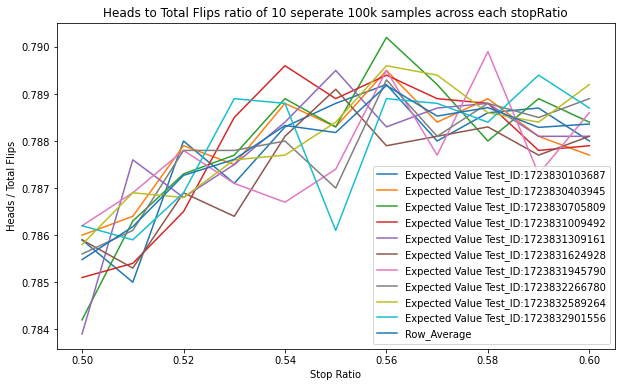
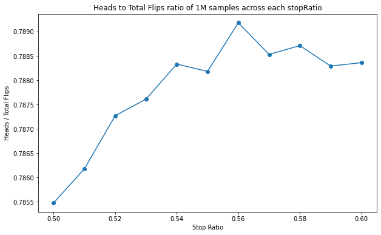

import random
import pandas as pd
from datetime import datetimeCoin Flip Game
This is a program I made to simulate a game came across preparing for job interviews. The idea of the game is this: - If you flip a coin until you decide to stop and you want to maximize the ratio of heads to total flips, what is that expected ratio?
My strategy
- if we have greater than .5 of ratio of heads/totalFlips we stop else we keep flipping
- however I will also model out different stopRatios to see if any others have greater expected values
- To avoid recursive depth problems with python if we have flipped more than 1000 times in a single simulation I will equate this to a ratio of .5 since if we keep flipping till infinity we approach a ratio of .5 heads to total flips.
def runFlipSimulation(numRuns:int, stopRatio:float) -> float:
averageSimulationOutcome = 0
for i in range(numRuns):
averageSimulationOutcome += (runSingleSimulation(0,0,stopRatio)/numRuns)
return round(averageSimulationOutcome,4)
def runSingleSimulation(numPreviousFlips:int,numHeads:int,stopRatio:float) -> float:
# here we are calling 0 tails and 1 heads
coin_flip = random.randint(0,1)
numPreviousFlips+=1
if coin_flip == 1:
numHeads+=1
currentRatio = numHeads/numPreviousFlips
if currentRatio > stopRatio:
return currentRatio
# if depth >1000 then lets call it .5 as the ratio (long run result anyway)
# this depth limit stops us from bricking python
if numPreviousFlips>=1000:
# Either return current ratio or long run ratio of .5
return max(.5,currentRatio)
return runSingleSimulation(numPreviousFlips,numHeads,stopRatio)# This method will run tests with stopRatio being between 50% and 60% inclusive steping by 1% with every new test
def run_ten_stopNumber_tests() -> pd.DataFrame:
# Test run with 100K flips
numRuns = 100000
# get a unique identifier for our run
now = datetime.now()
unique_string = str(int(now.timestamp() * 1000))
df = pd.DataFrame()
# run test
for i in range(0,11):
stopRatio = round(i/100+.5,2)
simResult = round(runFlipSimulation(numRuns,stopRatio),5)
df = df._append(pd.DataFrame({ f'Expected Value Test_ID:{unique_string}':simResult }, index=[stopRatio]))
return df# gather an array of dataframes that we generate through testing
dfStorageArr = []
numTests = 10
for i in range(numTests):
dfStorageArr.append(run_ten_stopNumber_tests())Results
# concat all results into one dataframe joining on the index(stopRatio)
df_all_results = pd.concat(dfStorageArr,axis=1)
df_all_results.head()| Expected Value Test_ID:1723830103687 | Expected Value Test_ID:1723830403945 | Expected Value Test_ID:1723830705809 | Expected Value Test_ID:1723831009492 | Expected Value Test_ID:1723831309161 | Expected Value Test_ID:1723831624928 | Expected Value Test_ID:1723831945790 | Expected Value Test_ID:1723832266780 | Expected Value Test_ID:1723832589264 | Expected Value Test_ID:1723832901556 | |
|---|---|---|---|---|---|---|---|---|---|---|
| 0.50 | 0.7859 | 0.7860 | 0.7842 | 0.7851 | 0.7839 | 0.7859 | 0.7862 | 0.7856 | 0.7858 | 0.7862 |
| 0.51 | 0.7850 | 0.7864 | 0.7863 | 0.7854 | 0.7876 | 0.7853 | 0.7869 | 0.7861 | 0.7869 | 0.7859 |
| 0.52 | 0.7880 | 0.7879 | 0.7873 | 0.7865 | 0.7868 | 0.7869 | 0.7878 | 0.7878 | 0.7868 | 0.7869 |
| 0.53 | 0.7871 | 0.7875 | 0.7877 | 0.7885 | 0.7875 | 0.7864 | 0.7871 | 0.7878 | 0.7876 | 0.7889 |
| 0.54 | 0.7883 | 0.7888 | 0.7889 | 0.7896 | 0.7884 | 0.7881 | 0.7867 | 0.7880 | 0.7877 | 0.7888 |
df_all_results.plot(kind='line',figsize=(10,6),title='Heads to Total Flips ratio of 10 seperate 100k samples across each stopRatio',xlabel='Stop Ratio',ylabel = 'Heads / Total Flips')
df_all_results['Row_Average'] = df_all_results.mean(axis=1)
# Step 2: Plot the averages
df_all_results['Row_Average'].plot(kind='line', figsize=(10, 6), marker='o', title='Heads to Total Flips ratio of 1M samples across each stopRatio',xlabel='Stop Ratio',ylabel = 'Heads / Total Flips')
Findings
It appears that we can find a new optimal strategy for this game that I find suprising: - We only accept a ratio of better than 56% heads/total flips - This means that if we are at a situation like TH where we have had two flips and 1 - The best long run result I was able to acheve was 78.9% heads/total flips ratio
Future Work
This was a naive method only considering that there has to be some constant ratio of heads/total flips at which we accept it. I also however could forsee a situation where our heads/total flips ratio might want to be lower or higher. An example of this might be: we are 1M flips out and our current ratio is 52% this might be considered good since our variance per flip is extremly low and our long run expectancy is 50%. Versus if we are currently in the start and have only flipped 25 times so far and our ratio is 52% (13 heads/25 flips) we might be more inclied to want a higher number since our variance per flip is much higher.
This is just some inital thoughts by me and am open to discussion! Feel free to reach out to me if you have any comments or ideas on the idea of a constant/variable stopRatio or any other improvements!